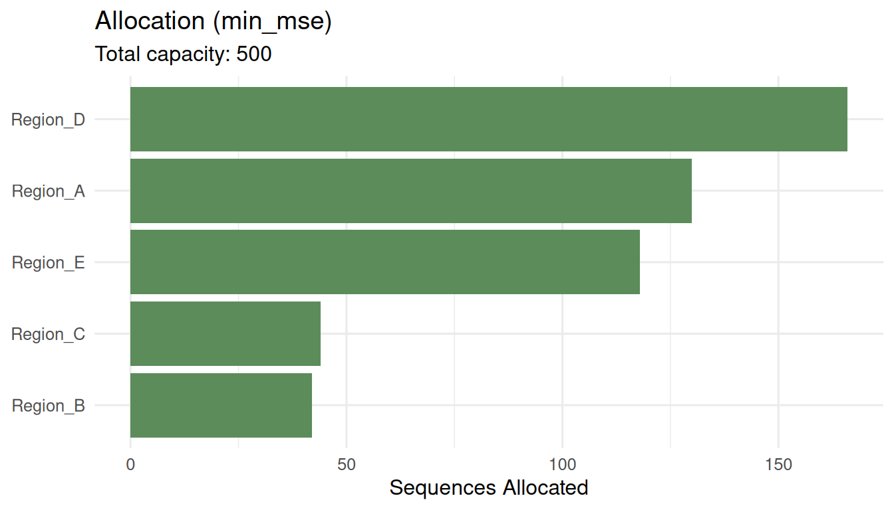

Optimizing Sequencing Resource Allocation
Source:vignettes/allocation-optimization.Rmd
allocation-optimization.RmdWhy allocation matters
In genomic surveillance, the total number of sequences you can generate each week is fixed by lab capacity and budget. The question is not how many to sequence (phylosamp answers that), but how to distribute a fixed number across regions, institutions, and sample sources.
Poor allocation wastes resources. If you sequence proportionally to submissions (which is what most systems do by default), you over-represent regions that send more samples — which are often the same regions that already have the highest sequencing rates.
The three objectives
survinger supports three optimization objectives:
min_mse: Minimize the mean squared error of lineage prevalence estimates. This is a Neyman-type allocation that gives more sequences to high-variance strata.max_detection: Maximize the probability of detecting a rare variant. This spreads sequences to maximize geographic coverage.min_imbalance: Minimize the deviation from population-proportional representation. This ensures each region is fairly represented.
Example
library(survinger)
data(sarscov2_surveillance)
design <- surv_design(
data = sarscov2_surveillance$sequences,
strata = ~ region,
sequencing_rate = sarscov2_surveillance$population[c("region", "seq_rate")],
population = sarscov2_surveillance$population,
source_type = "source_type"
)Optimize for minimum MSE
alloc_mse <- surv_optimize_allocation(design, "min_mse", total_capacity = 500)
print(alloc_mse)
#> ── Optimal Sequencing Allocation ───────────────────────────────────────────────
#> Objective: min_mse
#> Total capacity: 500 sequences
#> Strata: 5
#>
#> # A tibble: 5 × 3
#> region n_allocated proportion
#> <chr> <int> <dbl>
#> 1 Region_A 130 0.26
#> 2 Region_B 42 0.084
#> 3 Region_C 44 0.088
#> 4 Region_D 166 0.332
#> 5 Region_E 118 0.236
plot(alloc_mse)
Compare all strategies
comparison <- surv_compare_allocations(design, total_capacity = 500)
print(comparison)
#> # A tibble: 5 × 4
#> strategy total_mse detection_prob imbalance
#> <chr> <dbl> <dbl> <dbl>
#> 1 equal 0.000569 0.993 0.0486
#> 2 proportional 0.000460 0.993 0.00000482
#> 3 min_mse 0.000459 0.993 0.0000292
#> 4 max_detection 0.000560 0.993 0.0456
#> 5 min_imbalance 0.000460 0.993 0.00000482The table shows the trade-off: minimizing MSE may increase imbalance, while proportional allocation sacrifices detection power.
With minimum coverage constraints
alloc_floor <- surv_optimize_allocation(
design, "min_mse", total_capacity = 500, min_per_stratum = 20
)
print(alloc_floor)
#> ── Optimal Sequencing Allocation ───────────────────────────────────────────────
#> Objective: min_mse
#> Total capacity: 500 sequences
#> Strata: 5
#>
#> # A tibble: 5 × 3
#> region n_allocated proportion
#> <chr> <int> <dbl>
#> 1 Region_A 130 0.26
#> 2 Region_B 42 0.084
#> 3 Region_C 44 0.088
#> 4 Region_D 166 0.332
#> 5 Region_E 118 0.236Setting min_per_stratum = 20 ensures every region gets
at least 20 sequences, preventing any region from being invisible.
Choosing an objective
- Use
min_msewhen your primary goal is accurate prevalence tracking. - Use
max_detectionwhen hunting for rare emerging variants. - Use
min_imbalancewhen equity and representativeness are priorities.
In practice, reviewing the surv_compare_allocations()
output helps stakeholders understand the trade-offs and choose based on
their mandate.